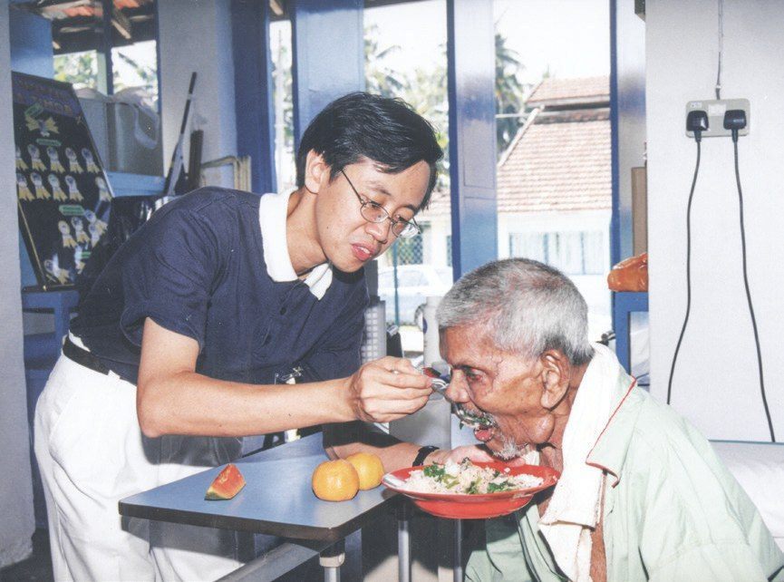
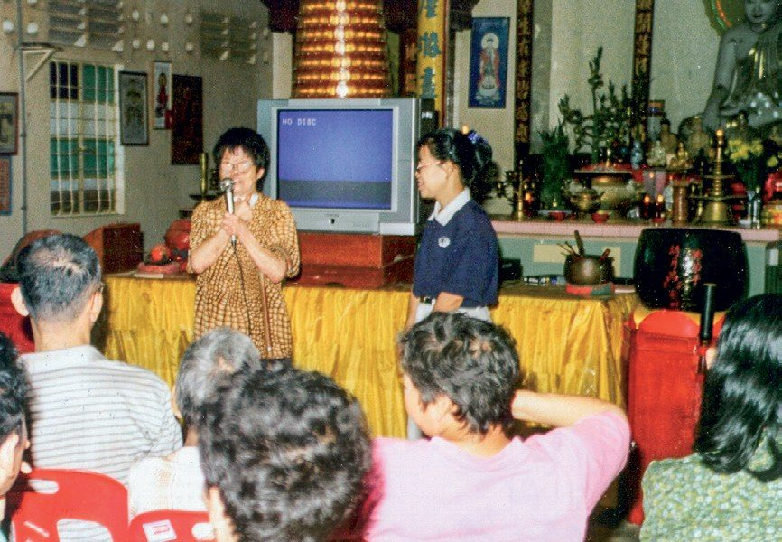
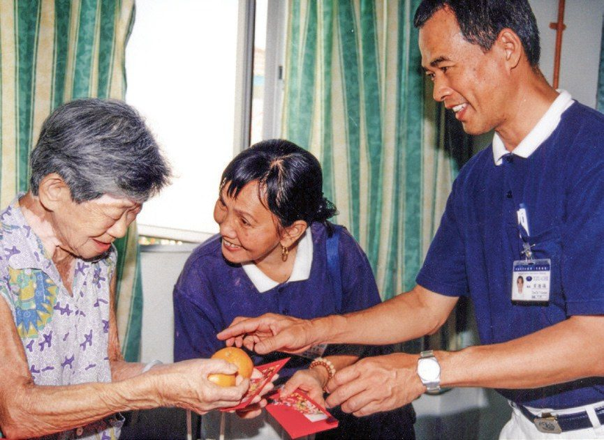
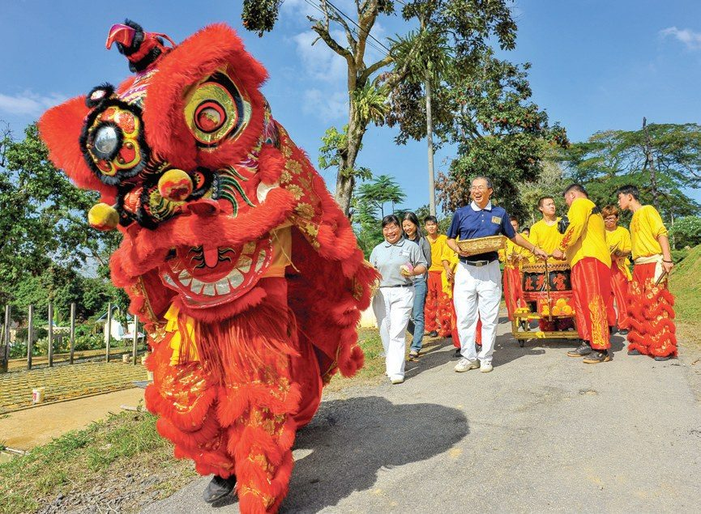
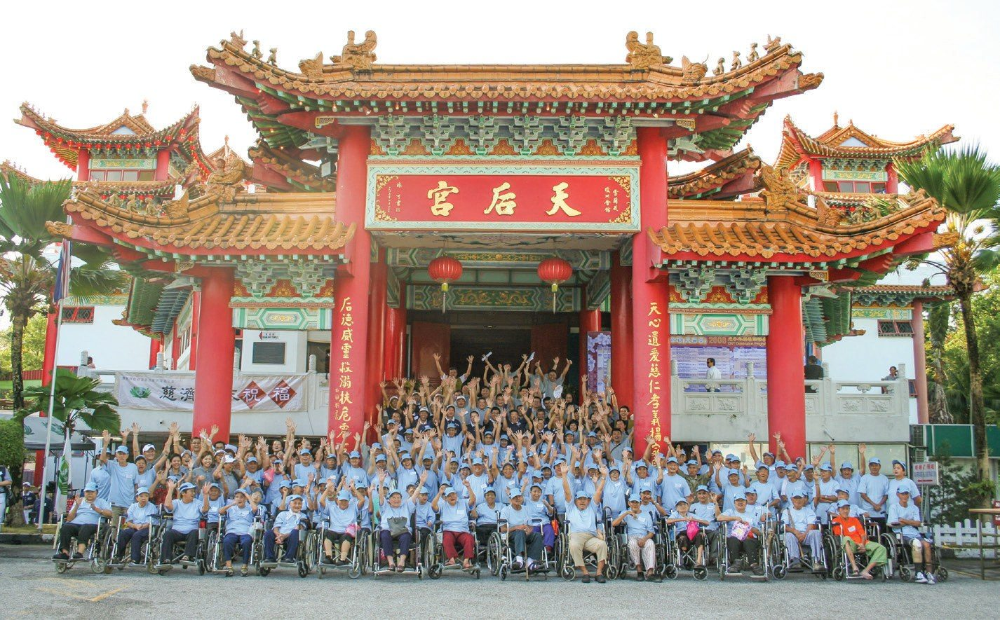
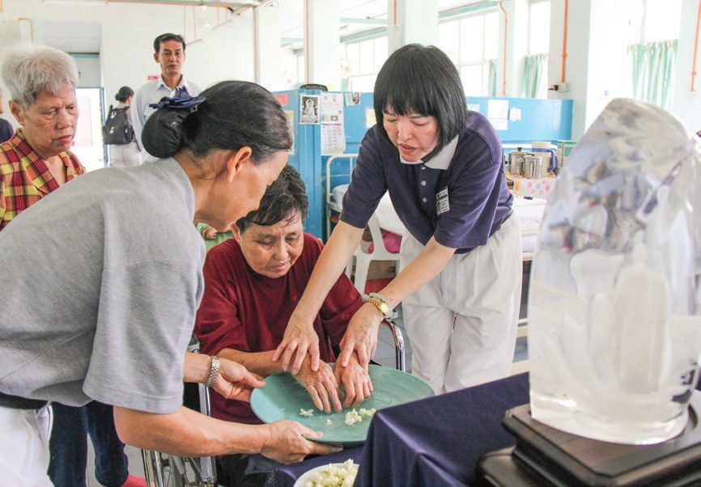
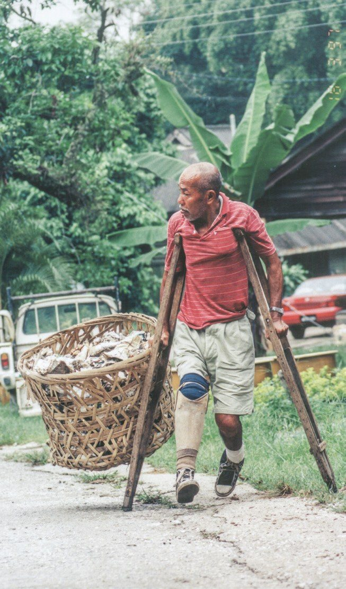
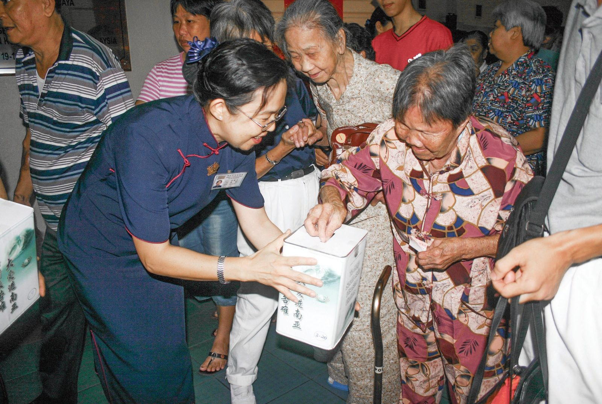
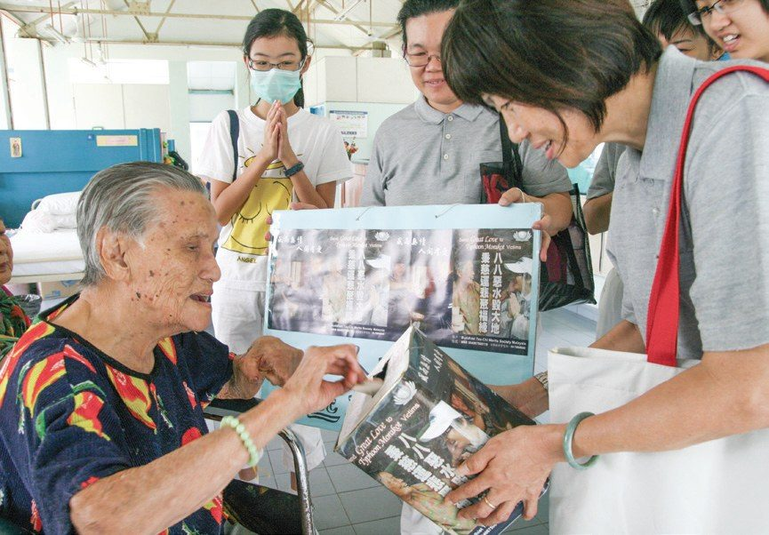
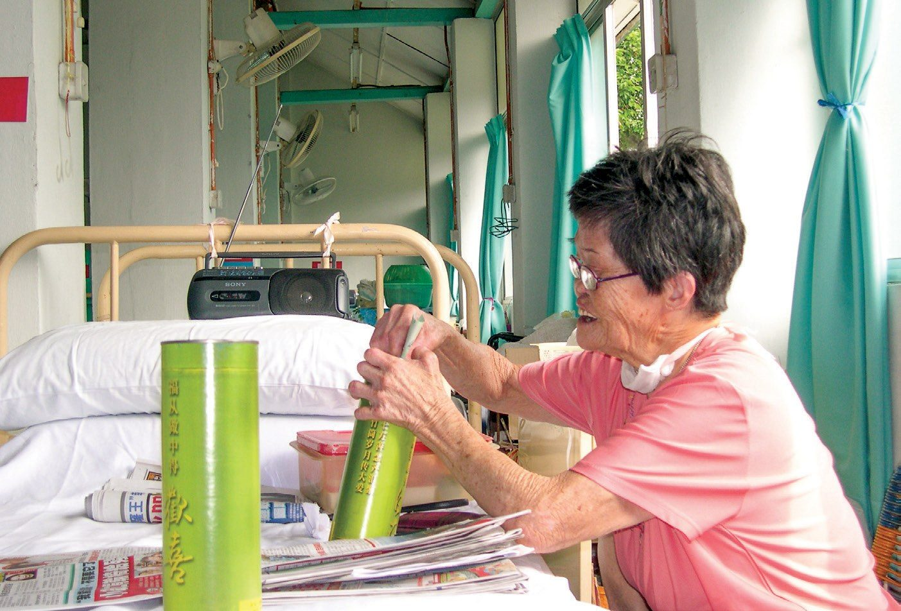

拔苦予樂
化愛膚慰
被關懷的人，也能成為付出的人嗎？

先別急著下結論，讀完再說說你的想法～
這一篇從院友的生活讀起：志工走近之後，才看見他們真正的需要。接著，關懷走進日常和節慶；後來，院友自己也動起手來。
下面是原書的節錄，黃色畫線是我們替你標出的重點。
讀之前：要了解院友的需要，你會先留意什麼？（可多選）
走入院區，看見需要
先讀病院的來歷，再跟著志工第一次走進去。閱讀引導
- 1926法令規定患者隔離p.55
- 1930雙溪毛糯病院設立p.55
- 1994志工首次走入病院p.56
- 1995起每月固定關懷p.57
- 1998院友開始做環保p.62
- 2003首辦共修聯誼會p.57
- 2012舞獅進院拜年p.59
- 2020疫情，暫停探訪p.57
由於早期麻瘋病無法治療，馬來西亞於1926年頒布《痲瘋病患法令》，規定痲瘋病患者要隔離集中在醫療院區治療。
……病院位於雪蘭莪州，佔地五百多英畝，是世界第二大麻瘋病療養院。……院區內設有雜貨店、學校、教堂、佛堂、警察局等，甚至還有墓地，儼如一個小城市。
……由於當時的社會對痲瘋病症的誤解，早年病院被鐵絲網圍著，並設有警察站崗。

那是不是一輩子都住在這裡？
……基於政府每月所提供的津貼僅二十令吉，病友們唯有自食其力，在木屋四周種植花卉販售……
1994年1月16日……慈濟志工首次走入病院訪視。……患者長期遭到社會大眾歧視，早已失去了對外界的信任，所以當志工造訪時，他們就會戒備的想：
「怎麼會有這麼好的人，願意為我們這些沒用的老人付出，是否有企圖？」
院友面對志工時的戒備・p.56
我大概也會先想一想……
志工們理解老人們的防備……多次探訪後，發現院友不缺醫療，但生活拮据……不過，他們更缺的是溫暖的陪伴與互動，因此志工經過會議評估後，將此機構列入慈濟長期關懷的對象。
隔年開始，慈濟志工固定每月前往關懷，發放物資、義剪、按摩，協助院友清掃，維修房屋、輪椅等……藉著聊天膚慰院友長期封閉的心。

為了表達對慈濟的感謝，數十位院友發心加入慈濟會員。
「雖然我是基督徒，但我也是慈濟會員。常常有人問我，妳為什麼要參加慈濟？我就告訴他們，因為慈濟的愛心很大！」
院友 王木蘭・p.57
陪伴走進日常與節慶
月餅、粽子、新春、歲末、浴佛——院友和志工慢慢熟起來。閱讀引導
猜一猜閱讀引導
1995年中秋節前夕，志工問一位院友阿嬤想不想吃月餅。阿嬤說想，可是吃不起。
你猜，阿嬤以為一粒月餅要多少錢？
由於被隔離多年，阿嬤對價格的記憶仍停滯在從前。

讀到這裡，心裡酸酸的。
志工非常不捨，於是隔年特別購買月餅致贈雙溪毛糯痲瘋病院的院友們。自此以後，慈濟贈送月餅的活動，年年持續不間斷，甚至擴展到長期照顧戶與社區民眾。

……承擔多年包粽任務的志工陳金菊在烹調上相當用心，希望做到少油少鹽，避免老人家消化不良。因此她不用馬來西亞傳統炒熟糯米的做法，而是用蒸熟的方式，味道清淡又健康。
2012年志工首次在春節期間安排舞獅活動，向阿公、阿嬤拜年。……挨家挨戶向老人拜年。
「活到六十多歲，我還是第一次看到舞獅來我家拜年！」
黃瑞貞阿嬤・p.59–60
院友們也在志工的打氣鼓舞下，提起勇氣，踏出生活半世紀的小世界。
原文・p.602004年起，每年冬令歲末，志工會承租巴士接送痲瘋院友……參加慈濟的聯歡活動。……2008年一改往例，於著名旅遊景點天后宮舉辦，讓院友們有機會外出踏青，看看不一樣的風景。

……院友王木蘭二十年前曾與朋友來到天后宮……她說，雖然二十年前同遊的朋友已經不在了，但慈濟人的大愛與關懷卻更為珍貴。
2010年開始，志工更貼心地將「琉璃佛」送到痲瘋病院，讓行動不便的長者不用出門也能浴佛。
……信奉基督教的林斗阿公也把雙手沾在香湯裡，慈濟志工則祝福阿公添福、添壽、添健康，讓原本一片寧靜的小木屋頓時熱鬧起來。

接下來換個角度——
找找看，誰自己動起手來了？
院友也作出選擇
從這裡起，主角換成了院友自己。閱讀引導
王平在九歲時因病住進雙溪毛糯痲瘋病院，數十年來都不曾有親人來探望。1996年，慈濟志工探訪獨居在小木屋的王平時，他的右腳已截肢，左腳踝也潰爛不堪……
1998年，慈濟志工向痲瘋病院的院友宣導環保理念，獲得了良好的迴響。

王平感念志工待他如親人……向志工表示，他因有機會向慈濟人學習，做個能付出的人而感到自豪……
王平阿公雖然右腳因糖尿病截肢，每天仍拄著拐杖到市場做回收，並用拐杖將一張張包水果的報紙勾進竹籮裡。

王平阿公，好厲害！
「垃圾變黃金，黃金變愛心」
王平常向院友、醫護人員分享的環保理念・p.63……大家聽了感動之餘，全村也跟著他做環保。
原文節錄・p.64好友羅錫山有感王平的病痛不比他少，但仍拖著殘缺身軀賣力做環保。他在病樓裡為何就不能做環保？於是，他也開始默默撿拾紙皮、紙箱等。
「我不懂什麼大道理，我只知道這些資源丟了可惜，也會弄髒環境。」
院友 羅錫山・p.64……院友齊心動手做資源回收，為愛護地球盡一分心力，讓院友從手心向上成為手心向下的人。
從院區，到更遠的需要
一角錢、一令吉，院友把竹筒裡的心意送到更遠的地方。閱讀引導
「你們對我們這麼好，我們能回報什麼？」
院友 路士譚問志工・p.64……「其實，每天存下一角錢，就可以做善事幫助人。」宋進滿的鼓勵開啟了路士譚走入慈濟的因緣。「一角錢也可以做善事，我們都可以做到啊！」路士譚在院裡奔走相告，響應竹筒歲月。
當志工再到病院關懷時，路士譚立刻布施三令吉，成為慈濟在痲瘋病院的第一個會員，他還召集十多位院友一起加入慈濟。
「能捐才是福氣，幫助人是不講次數的。」
院友 錦緞・p.65
這句我想抄進筆記本。

……他們年紀雖大，身體四肢也因為痲瘋病菌而殘缺不全，卻每天一令吉、一令吉地攢錢，要幫助比他們更可憐的人。
1999年臺灣發生九二一大地震，當志工前來院區關懷時，院友們早已拿著竹筒，排好隊等待志工的到來。
……2010年……院友們聽到慈濟正在為海地籌募賑災款項，有人義賣盆栽，有人捐出存款，希望為災民盡一分心……

儘管生活窮困，但付出的那一滴滴的小水滴，也能與大海融匯一起，去做救人的工作，這是多令人感動的一件事！
原文・p.67
停一停：誰自己動起手來？閱讀引導
選一位你印象最深的院友。沒有標準答案。
這是院友自己的選擇。它讓你對「誰能付出」多看見了什麼？

一起回頭看看吧～
回望
依本章原文整理，每一條都標了原書頁碼。閱讀引導
背後原因
為什麼關懷要這樣開始
- 早年痲瘋病無法治療，1926年起法令規定患者隔離；社會的誤解讓病院圍上鐵絲網，院友長年與外界隔絕。p.55–56
- 志工初到時，院友心存戒備：「是否有企圖？」p.56
- 多次探訪後才看清：院友不缺醫療，生活卻拮据，更缺溫暖的陪伴與互動。p.56
後續發展
關懷怎樣一年年走下去
- 第二年起每月固定前往；2003年起每月共修聯誼，數十位院友加入慈濟會員。p.57
- 月餅、粽子、新春拜年、舞獅；2004年起歲末接院友外出團圓，2010年起把琉璃佛送進院區。p.58–61
- 1998年起院友投入環保；路士譚成為院裡第一個會員，竹筒在院中傳開。p.62–65
- 2020年疫情爆發，院方暫停志工前往服務。p.57
社會影響
影響走出了院區
- 贈送月餅從病院擴展到長期照顧戶與社區民眾。p.59
- 王平帶動全村做環保；每月第二個星期日，院友、志工和附近居民一起在靜修院前做回收。p.63–64
- 九二一地震、南亞海嘯、海地賑災，院友拿出竹筒和積蓄，從「手心向上」成為「手心向下」。p.66–67
這三欄只整理本章寫到的事。每位院友的經驗是否相同、長遠影響有多大，本章沒有下結論，也不能只憑這一篇斷定。
回頭看讀前的選擇閱讀引導
書中記下了生活拮据、院友對外界的戒備，也記下了對陪伴與互動的需要（p.56）。讀完之後，你想補上或調整哪一項？
只有你自己看得到喔！

準備好了就一起出發～